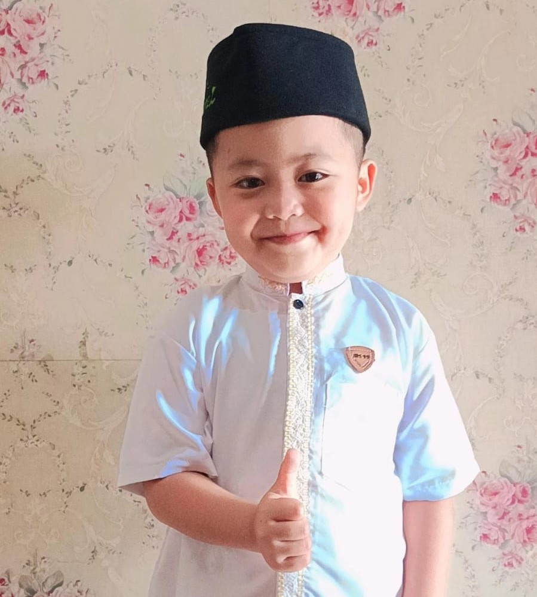

Dengan penuh rasa syukur kami mengundang Bapak/Ibu/Saudara/i untuk menghadiri acara khitanan putra kami.
Hari & Tanggal
Sabtu, 30 Mei 2026
Jam 09.00 WIB
Lokasi
Kp. Loa Rt. 04 Rw. 05 Desa Loa Kecamatan Paseh
Buka Di Google MapsPutra dari Bapak Gingin Ginanjar SE, & Ibu Wiwit Juwita Destariusty

Dengan penuh rasa syukur kami mengundang Bapak/Ibu/Saudara/i untuk menghadiri acara khitanan putra kami.
Sabtu, 30 Mei 2026
Jam 09.00 WIB
Kp. Loa Rt. 04 Rw. 05 Desa Loa Kecamatan Paseh
Buka Di Google Maps